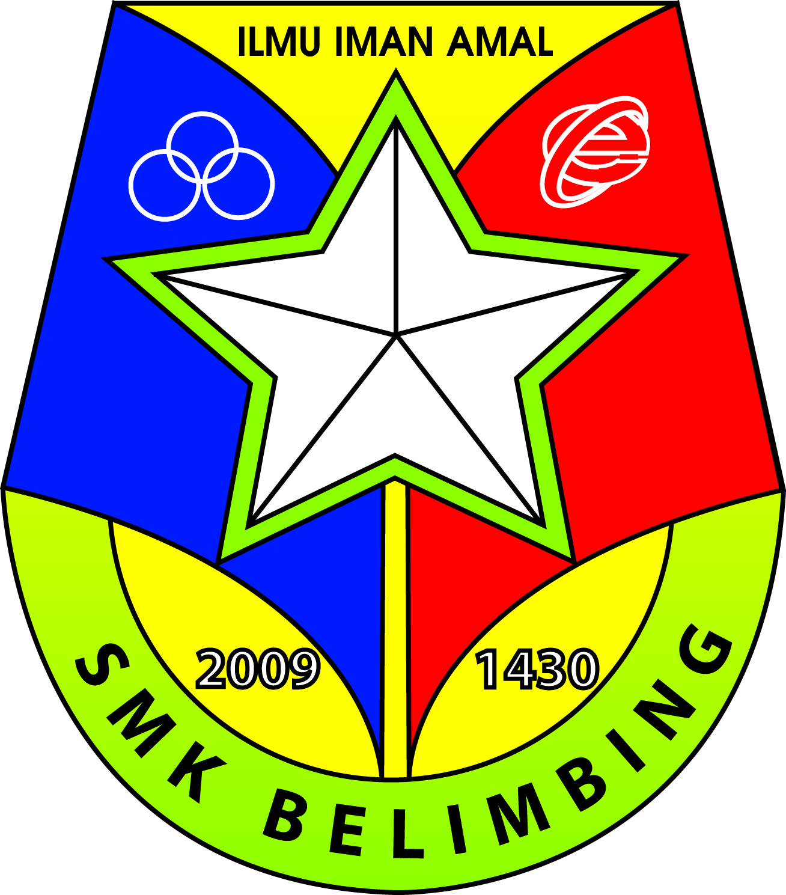
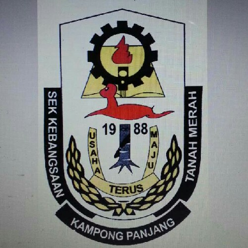

I studies in UiTM Machang from 2018 until now. I already receive 3 dean arwards during studies from semester 1 to 3. My CGPA in this 4 semesters is 3.52 and I must face 1 semester left to finish my studies in Diploma

I used to studied at SMK Belimbing in Tanah Merah, Kelantan from form 1 to 5. I got 4A's, 4B's and 1C in Sijil Pelajaran Malaysia(SPM)
In Penilaian Tingkatan 3(PT3), I got 6A's from 9 subjects. I am so proud with my results.

For Ujian Pencapaian Sekolah Rendah, I got 4A's. I studies in SK Kampong Panjang that located at Tanah Merah, Kelantan